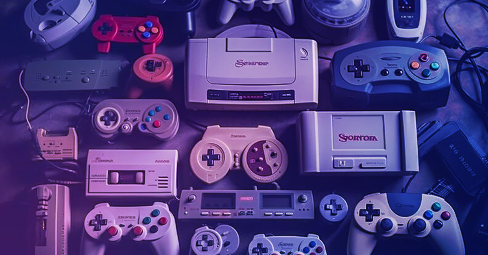

Es un juego de construcción y exploración en un mundo abierto donde los jugadores pueden recolectar recursos y construir estructuras.
Entra/ConoceEs un juego de acción y aventura ambientado en una versión ficticia de California, donde los jugadores asumen el rol de un personaje que participa en misiones y actividades delictivas.
Entra/ConoceEs un juego de plataformas donde los jugadores controlan a Mario o Luigi para saltar sobre obstáculos, derrotar enemigos y rescatar a la Princesa Peach del villano Bowser.
Entra/Conoce